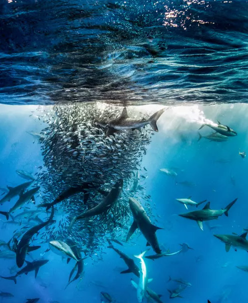

Explore The World
Phasellus eget lacinia ipsum. Aliquam lectus tellus, cursus at
fermentum id,
hendrerit sollicitudin.

Roundup at
Revillagigedo, by
Ralph Pace, Big
Picture wildlife
images competition,
aquatic life

Dutch photographer
Marsel van Oosten’s
stunning portrait of
golden snub-
nosed monkeys

Komodo Judo by
Andrey Gudkov Two
large male Komodo
dragons hissing
angrily at each other
in national park.